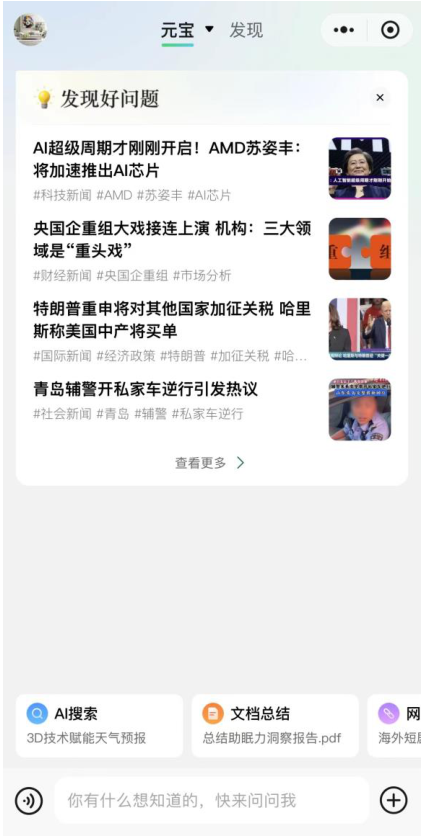
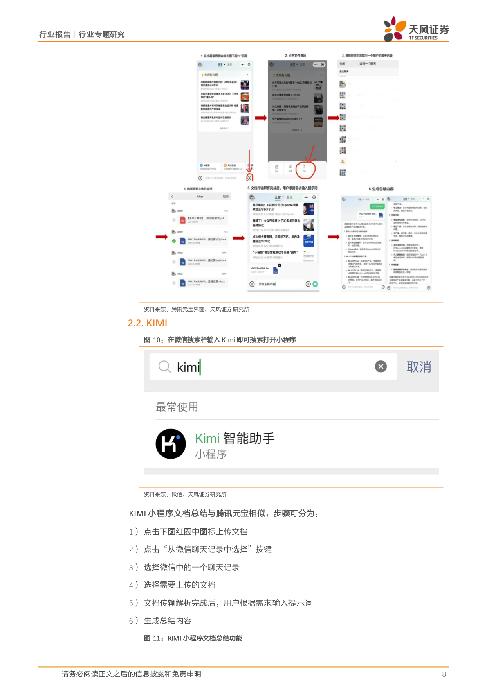
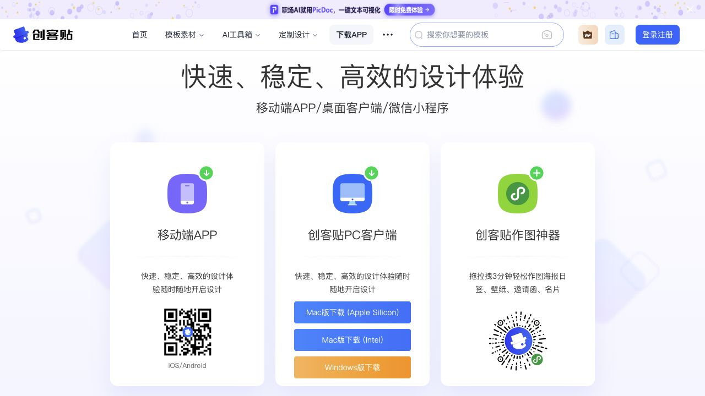
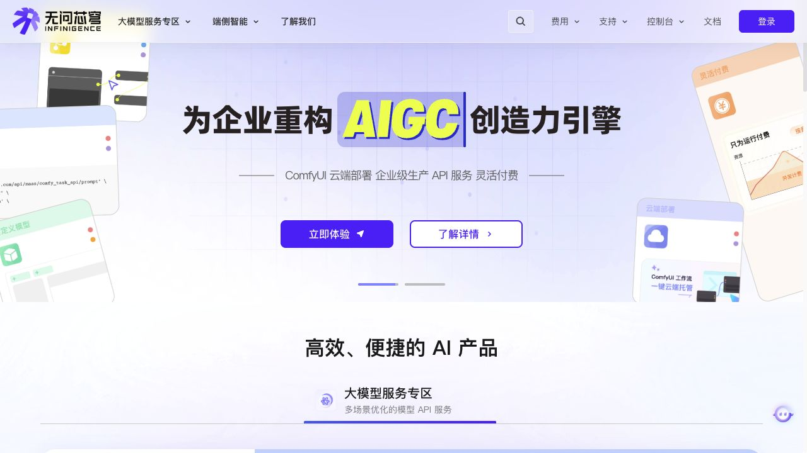
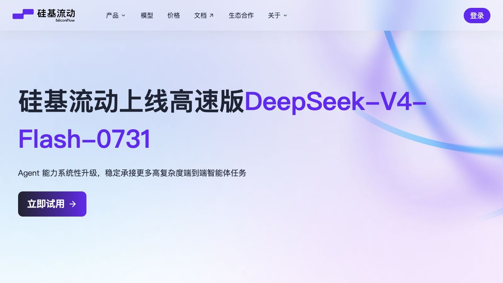

Kimi｜小程序首页
历史小程序截图 · 2024-04-08
深色底、少量蓝色强调，底部输入框与示例问题构成使用入口。
查看来源 ↗Kimi｜语音输入
历史小程序截图 · 2024-04-08

输入方式切换后，语音成为主要操作；保留示例任务卡。
查看来源 ↗元宝｜小程序首页
历史小程序截图 · 2024-09-18 报告第7页

浅底、圆角内容区，任务快捷入口位于底部输入框上方。
查看来源 ↗元宝｜文件总结流程
历史公开报告 · 2024-09-18 第8页

保留原报告页面和来源；观察选文件、发送、阅读结果的步骤。
查看来源 ↗创客贴作图神器｜官方入口
官方网页实拍 · 2026-10-14；不是小程序内部界面

已确认官方小程序名称和二维码；模板、编辑、会员页待微信内实拍。
查看来源 ↗无问芯穹｜企业端补充
官方 Web 实拍 · 2026-10-14

仅作为企业产品组织参考，未确认官方小程序入口。
查看来源 ↗硅基流动｜企业端补充
官方 Web 实拍 · 2026-10-14

仅作为企业产品组织参考，未确认官方小程序入口。
查看来源 ↗